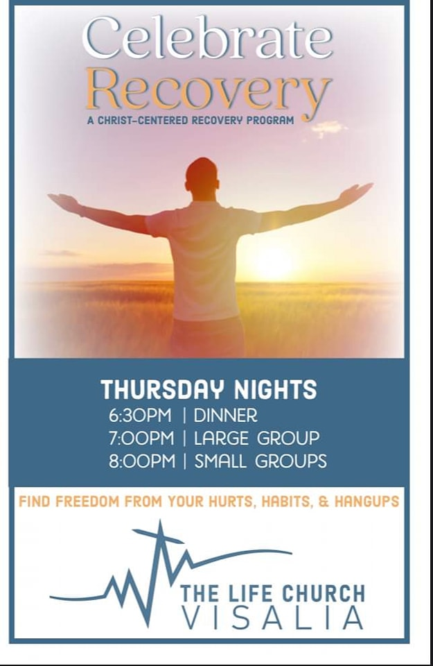

Visiting soon? Please stop by the Connect table - We have a gift for you!
Outreach Ministry

We offer year-round opportunities to serve! Whether it be food prep, clothing distribution, volunteering time, evangelism or clean-up we'll help you plug in!
Contact Evangelist Lety Gonzales
to engage with Hood Outreach Ministries
ph 559-805-6070
Children's Ministry

Children's classes currently meet on
Sunday Mornings right after worship.
The Littles & The Middles meet for games, crafts, snacks & the Word of God.
We have a new Nursery available, too!
Let us care for your precious cargo
while you enjoy the service!
Please direct Nursery questions
to Pastor Eva Perez
Men's Ministry

Looking for a comfortable place to belong,
becoming the man God wants you to be and have some great laughs along the way?
TLC Men's Group is a place you'll want to visit!
Meeting the 2nd Saturday of every month,
Come enjoy a home-cooked meal spiced with
a bit of worship, the Word & the building of friendships reaching beyond the TLC walls!
Contact Chaplain Bill Phillips for Info
ph 559-747-6321
Celebrate Recovery
Growing Together With Jesus Marriage Ministry

Come Join us as we eat, fellowship, enter into the Word of God, and grow together in our marriages and as a community of faith in the Love of God!
Contact Pastor Joseph or Adela For more information
(559) 412-9332 or (559) 412-9587